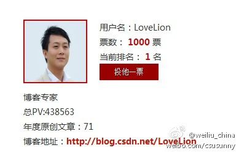

//@孙伟:Andy Jassy是全世界云的教父级的人物。他领导的亚马逊云服务成为了全世界最大的提供商，是第2名到第15名，云服务市场份额总和的5倍。本周星期四十九号上午十一点到十二点，欢迎你来聆听他的演讲，也希望我们和亚马逊的商谈能够有很好的结果。

Ada李力
2013-12-18
Ada李力
2013-12-18
?//@Vnox:氨基酸＝ (俺)是(基)佬,（算）了吧//@8PBoracle_福利姬存在感无限降低: 然后什么意思//@decadeformij小盆友要做大丧失:对 //@HUIToAD:氨基酸结构通式 //@decadeformij小盆友要做大丧失:氨基酸 _(:3」∠)_ //@不动大图书馆的牧羊人:这是结构式 //@_慕黎安: 嗯…是化学式，…然后我没看懂
Ada李力
2013-12-18
转发微博
@育儿男人帮_毛豆爸爸:
@Ada李力 @极客头条@柴阿峰 @E路向前--李忠利 @敏捷Agile @若莹vivi @过程改进之老王 @IBM-爱T派的奇思妙想 @IBM软件技术支持 IBM的敏捷转型成果- 博客频道 - CSDN.NET  网页链接
网页链接


Ada李力
2013-12-18
明俊批评我早上起来开电视动静大，我说姣姣睡得死，明俊说姣姣肯定和他一样被吵醒了。明俊逼姣姣一定说出我开电视时她醒没醒。姣姣磨蹭会儿才说: 有一点儿。明俊说有一点儿就是醒了，我对明俊说闺女是在给你面子好吧。- 做孩子确实不容易


Ada李力
2013-12-18
@weiliu_china:
【感谢大家的支持与厚爱，Sunny必将继续加油！[呵呵]】突然发现票数上四位数了， 网页链接
网页链接
- 
Ada李力
2013-12-18
回复@阿朱:获奖与否不影响你的名气和影响力，你是照着出书标准写文章的。这次博客之星评选感觉更像是比粉丝数的。[呵呵] //@阿朱:唉，看来博客写了一年50多篇白写了，没拉票没投票，没希望获奖啦。呵呵 //@Ada李力:恭喜 #CSDN2013年度博客之星评选#
//@Ada李力:恭喜 #CSDN2013年度博客之星评选#
@weiliu_china:
【感谢大家的支持与厚爱，Sunny必将继续加油！[呵呵]】突然发现票数上四位数了，网页链接